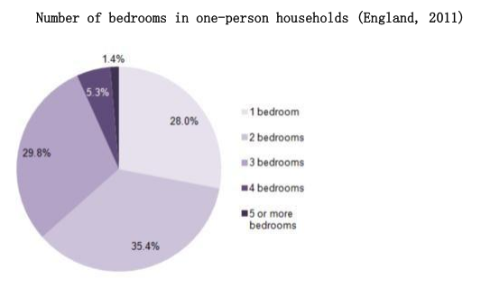

Day3: 2024.12.18 & 2024.12.19
Recite: Jogging
Every day, in all kinds of weather, thousands of men and women go jogging. Why has jogging—running slowly for long distances—become so popular? Most joggers like it because they have heard it is a very good exercise. Jogging makes the heart stronger and helps people lose weight. It can also help them feel better about themselves.
How fast should you go? Jog with a friend and talk to each other as you run. If you have difficulty talking, you are going too fast. How far should you jog? Remember not to go too far too soon. In fact you should walk, not run, the first few times. Then do some short jogs, but no more than what you can do comfortably.
After that, increase your distance a quarter or half of a mile every two weeks or so. Maybe in a few years, you, too, can run in a marathon like thousands of other people do.
Recite: 杨帅 谈论一个还未实现的理想
An ambition I have is writing and publishing my own book.
I've always loved reading, and writing a book has been a dream of mine since childhood.
I've written some short stories and brainstormed ideas for my novel, but I haven't started working on the actual book.
Recite: 杨帅 谈论一步电影
Recently, I watched the movie The Pursuit of Happiness, which I really enjoyed.
It stars Will Smith, who plays Chris Gardner, a man struggling to make ends meet while caring for his young son.
- Star 这里表示由 sb 主演
- Make ends meet 维持生计，end 表示末端，理解为让两端相接
It's a motivational film that reminds me to appreciate the little things in life and stay positive in the face of challenges.
Recite: 杨帅 Part2 A beautiful city
Question: Describe a beautiful city. You should say: Where it is. How you know it. What it is famous for. And explain why you think it is a beautiful city.
I'm going to talk about Shanghai, which is a cosmopolitan city. I think it's one of the biggest metropolis cities in the world. It's situated in the south of China in the Yangtze River Delta. I know the city because, well, everybody knows it, not only in China, but all over the world. I don't remember when I first heard about this city. I think I was in primary school, and I learned about it in a textbook. I'm sorry, it's been a long time, so my memory is a little vague.
- Cosmopolitan 世界性的
- Metropolis 大都市，一个国家的主要城市
- Yangtze River Delta 长江三角洲
Shanghai is famous for tons of things, including its strong economy, its skyscrapers, and also the bund. You know, the bund is a very well-known tourist attraction in Shanghai. It is also a business center because, right next to the bund is the Huangpu River, and then further that way are a lot of modern high-rises where many international companies headquarters are located. And then on the other side of the bund are many historical buildings which date back to 100 years ago.
- Skyscraper 摩天大楼
- Bund 外滩
- High-rise 高层建筑、高楼
- Headquarters 总部
- Date back to 追溯到
So when you are walking on the bund and it really gives you a glimpse of the past, I think Shanghai is a really beautiful city, mainly because of the Bund. It's a very spectacular place. When you are there, you just can't help but admire the beautiful scenery. Plus it's a combination of the past and today. So, yeah, it's just, you know, you get the best of both worlds. It's really awesome.
- Spectacular 壮观的（Very impressive）
- Get the best of 表示享受到好处
Recite: SIMON Part1-6
The bar chart below shows the proportions of English men and women of different ages who were living alone in 2011. The pie chart compares the numbers of bedrooms in these one-person households.


The two charts give information about single-occupant households in England in the year 2011. The bar chart compares figures for occupants' age and gender, and the pie chart shows data about the number of bedrooms in these homes.
Overall, females made up a higher proportion of people living alone than males, and this difference is particularly noticeable in the older age categories. We can also see that the most common number of bedrooms in a single-occupant home was two.
- Age category 年龄段
A significant majority of the people aged 65 or over who were living alone in England in 2011 were female. Women made up around 72% of single occupants aged 75 to 84, and 76% of those aged 85 or over. By contrast, among younger adults the figures for males were higher. For example, in the 35-49 age category, men accounted for nearly 65% of people living alone.
- Significant majority of 绝大多数
- Account for 占比
In the same year, 35.4% of one-person households in England had two bedrooms, while one-bedroom and three-bedroom homes accounted for 28% and 29.8% of the total. Under 7% of single-occupant homes had four or more bedrooms.